地政学
リバーサイドはロサンゼルス港湾と内陸州を結ぶ物流回廊の上にある。海辺の都市ではないが、高速道路、鉄道、倉庫、住宅地を通じて太平洋貿易を受け止める。山裾と砂漠の手前にある位置が都市の役割を決める。今も。

🇺🇸 アメリカ合衆国 / カリフォルニア州 / World City Atlas
ロサンゼルス大都市圏の外縁で、柑橘産業の歴史、大学、郡行政、物流倉庫、郊外住宅、長距離通勤が交わるインランド・エンパイアの中心都市。沿岸都市の成長を内陸から支える街です。
都市の骨格
リバーサイドはロサンゼルスの影に隠れやすいが、南カリフォルニアの住宅、倉庫、大学、郡行政、移民労働を読み解く重要な内陸都市である。山と川、乾いた熱、広い道路が都市の速度を決める。
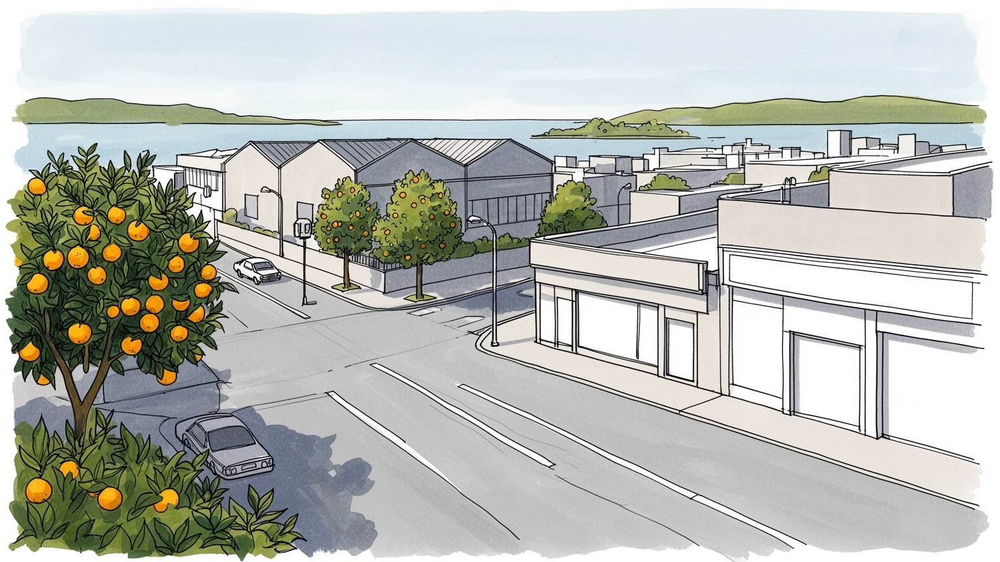
リバーサイドはロサンゼルス港湾と内陸州を結ぶ物流回廊の上にある。海辺の都市ではないが、高速道路、鉄道、倉庫、住宅地を通じて太平洋貿易を受け止める。山裾と砂漠の手前にある位置が都市の役割を決める。今も。
郡行政、大学、医療、教育、製造、配送、倉庫が雇用を作る。専門職と現場労働は同じ道路網に依存し、港から来る貨物、住宅建設、介護、飲食、清掃を移民と通勤者が支える。賃金と通勤時間が生活を左右する。日々。
ミッション・インの華やかな建築、柑橘産業の記憶、ラティーノの教会と家族行事、大学の研究文化が重なる。カトリック、福音派、移民宗教、学校の祭りが、内陸都市の日常の暦を作る。多言語の生活も街を形にする。
旅行者は歴史的ホテル、大学、柑橘史跡、山裾の散策を訪れるが、住民は住宅費、車通勤、暑さ、山火事煙、大気汚染、学校区と向き合う。観光の静けさの背後で、広い内陸生活圏が毎日動く。車の距離が日常を測る。
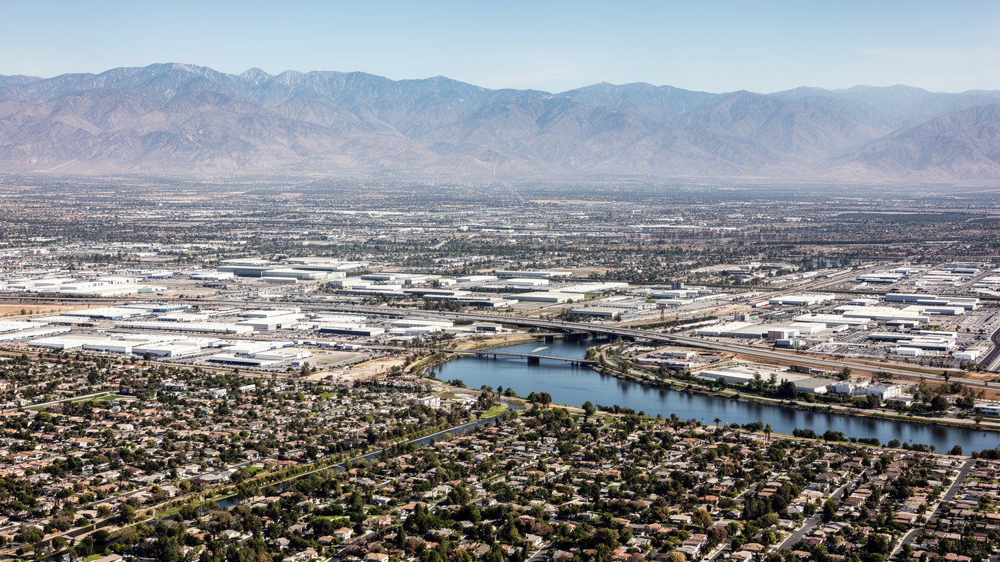
リバーサイドを理解する入口は、南カリフォルニアの海岸ではなく内陸の地理である。サンタアナ川の谷、サンバーナーディーノ山地、乾いた丘陵、高速道路の回廊が重なり、都市はロサンゼルスの外縁でありながら独自の中心性を持つ。インランド・エンパイアという呼び名は広く、リバーサイド、サンバーナーディーノ、オンタリオ、コロナ、モレノバレーなどを含む生活圏を示す。港から来る貨物はこの内陸を通り、住宅を求める世帯も海岸部の高い地価からここへ移ってきた。山と砂漠に近い位置は、晴天と眺望を与える一方、暑熱、乾燥、山火事の煙、洪水の急な流れをもたらす。地形は観光の背景ではなく、開発の方向、空気の滞留、通勤の長さ、倉庫の立地を決める条件である。リバーサイドは小さな単独都市ではなく、太平洋岸の消費と内陸の土地をつなぐ結節点として読む必要がある。都心の教会やホテルを歩くだけでは、広い道路、山裾の住宅、物流用地、川沿いの空地が作る都市の実体は見えない。内陸の距離感こそが、リバーサイドの日常を支える骨格である。さらに、都市圏の境界は住民の移動によって毎日引き直される。通勤、買物、通学、診療、週末のレジャーが別々の自治体へ散り、リバーサイドは一つの市である以上に、広い内陸生活の結び目として機能している。この広域性が都市の個性である。
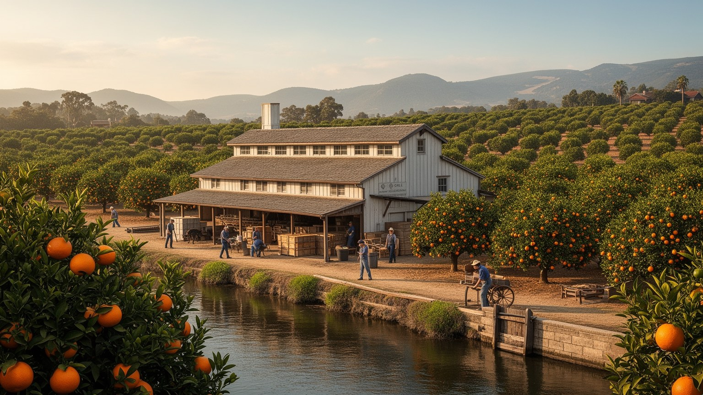
リバーサイドの都市イメージには、柑橘産業の記憶が深く刻まれている。十九世紀後半、ネーブルオレンジの栽培が成功すると、乾いた内陸の土地は灌漑、鉄道、包装、販売、移住者の投資によって豊かな農業景観へ変わった。オレンジ畑は単なる作物ではなく、南カリフォルニアを健康で明るい楽園として売り出す広告の素材になり、リバーサイドの住宅地、銀行、ホテル、学校、慈善、都市計画に資本を流し込んだ。現在、連続した畑は縮小し、住宅地や道路に置き換わったが、柑橘州立歴史公園や古い倉庫、街路樹、ミッション・イン周辺の建築にはその記憶が残る。ただし、果実の物語は富裕な開拓者だけの話ではない。灌漑用水を誰が得たのか、土地を誰から奪ったのか、収穫や箱詰めを担った移民労働者がどのように暮らしたのかも見なければならない。柑橘産業は牧歌的な風景であると同時に、労働、土地所有、広告、鉄道、環境改変の歴史である。リバーサイドのオレンジは、都市が自分をどう売り出し、どの記憶を保存し、どの労働を忘れやすいかを教えている。甘い香りの背後には、水と土地をめぐる競争があった。保存された果樹園や博物館を歩くことは、失われた農地を懐かしむだけではない。農業景観が住宅都市へ変わった過程を読み、今日の水利用や開発圧力を考える入口にもなる。都市の記憶は甘いだけではない。
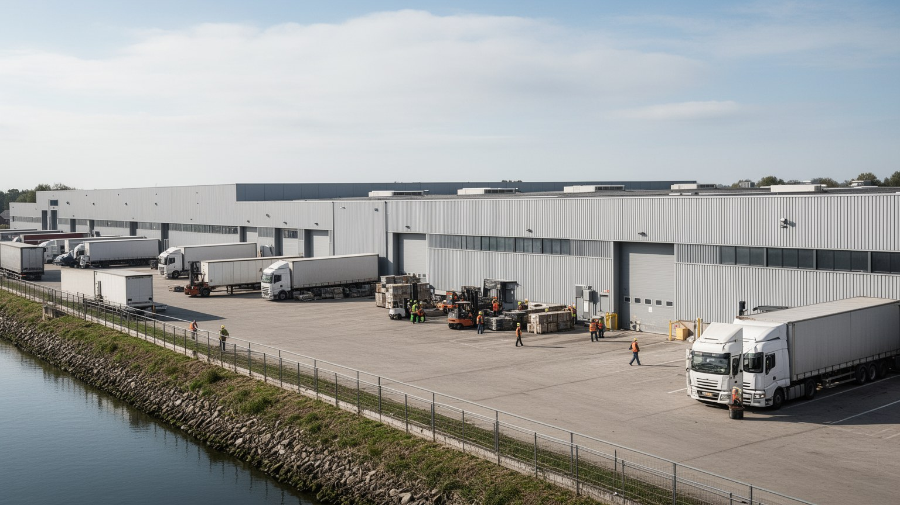
リバーサイド周辺の現代経済を読むには、物流倉庫を避けて通れない。ロサンゼルス港とロングビーチ港に着いた輸入貨物は、高速道路、鉄道、インターモーダル施設を経て内陸へ入り、広い土地を持つインランド・エンパイアに巨大な倉庫群を作ってきた。オンライン小売の成長はこの動きをさらに強め、箱を仕分ける仕事、トラック運転、フォークリフト、警備、清掃、設備保守、派遣労働を増やした。物流は都市圏の雇用を支える一方、低賃金、不安定なシフト、労災、組合化、長距離通勤、排気ガス、騒音、道路損傷をめぐる対立を生む。倉庫は外から見ると単純な箱型建物だが、その中では秒単位の管理と身体労働が組み合わされている。港湾都市の消費者が翌日配送を当然と考えるほど、内陸の住民はトラック交通と大気汚染を負担する。リバーサイドの物流経済は、海岸部の豊かな消費と内陸部の土地利用を結ぶ不平等な関係でもある。雇用の数だけで評価せず、賃金、健康、道路の安全、地域の声、倉庫の立地規制を合わせて見る必要がある。物流は見えない都市サービスではなく、リバーサイドの風景と空気を変える中心的な産業である。夜明け前に動くトラック、昼夜をまたぐ倉庫シフト、住宅地の近くを走る貨物車は、世界貿易が地域の睡眠、呼吸、道路安全にまで入り込んでいることを示している。
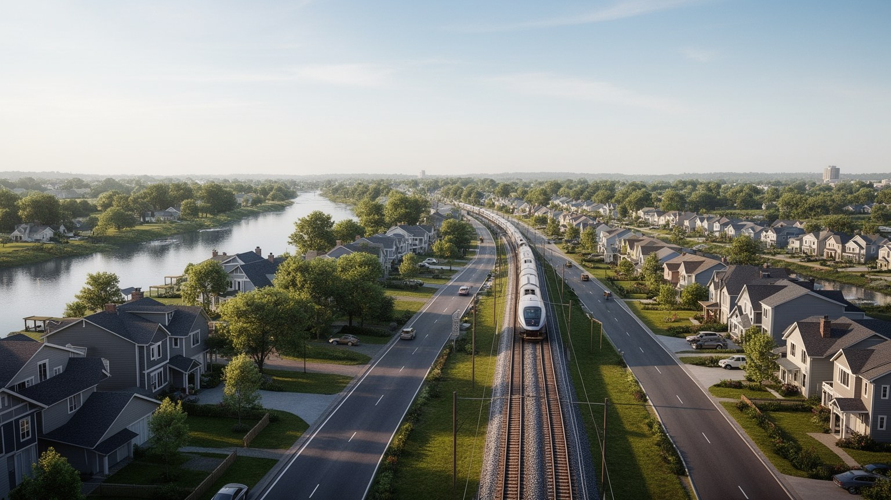
リバーサイドは、南カリフォルニアで住宅を求める多くの世帯にとって現実的な選択肢になってきた。ロサンゼルスやオレンジ郡の高い住宅費から離れ、より広い家、庭、学校区、駐車場を求めて内陸へ移る人は多い。しかし手の届く住宅は、しばしば長い通勤と引き換えになる。高速道路の渋滞、メトロリンクの本数、ガソリン代、保険、車の故障、育児の送迎は、家計と時間を強く縛る。リバーサイド市内で働く人もいるが、沿岸部やオンタリオ、サンバーナーディーノ方面へ移動する人も多く、生活圏は行政境界を大きく越える。新しい分譲地は税収と人口を増やす一方、水使用、山火事リスク、学校の混雑、道路整備、低所得賃貸の不足を招く。古い地区では家賃上昇や老朽住宅の問題があり、若者や移民世帯は住まいの安定を得にくい。住宅の広さだけを見れば郊外の成功に見えるが、毎日の移動時間を含めると負担は重い。リバーサイドの暮らしを読むには、玄関から職場までの距離、子どもの学校、買物、医療、暑い日の停電、山火事煙の日の室内環境まで考える必要がある。家は都市の夢であると同時に、道路と気候に結びついた責任でもある。住宅政策は、戸建ての供給だけでなく、駅近くの賃貸、学生向け住宅、高齢者の移動、歩ける商店街も含めて考えなければ、内陸の負担を次の世代へ残す。選択肢の幅が生活の安定を左右する。
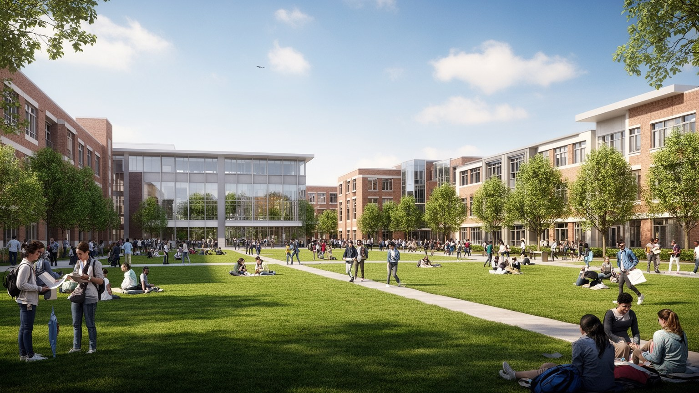
リバーサイドにとって、カリフォルニア大学リバーサイド校は単なるキャンパスではなく、都市の知的な重心である。農業研究の歴史を持つ大学は、現在では科学、工学、人文、社会科学、医学、公共政策、移民研究などを通じて、内陸カリフォルニアの課題を考える場になっている。学生の多くは第一世代大学生や多様な背景を持つ若者であり、大学は社会的上昇の通路として大きな意味を持つ。キャンパスは雇用、住宅需要、飲食、交通、文化イベントを生み、周辺地区の家賃や商業にも影響する。大学があることで、リバーサイドは物流と住宅だけの都市ではなく、研究、教育、公共討論、若者文化を持つ都市として読める。一方で、学生の住宅不足、通学交通、学費、奨学金、地域住民との距離、大学周辺の再開発は課題である。教育機関は地域の不平等を解決する力を持つが、全ての若者に同じように届くわけではない。リバーサイドの大学を読むことは、内陸部の子どもがどこで学び、どの仕事へ進み、地域に残るのかを読むことでもある。キャンパスの研究が大気汚染、乾燥地農業、公共医療、移民社会と結びつくとき、大学は都市の外から知識を持ち込む場所ではなく、地域の現実を考える装置になる。図書館、実験室、バス停、学生食堂は、都市の将来を担う若者が地域と接触する日常の入口でもある。
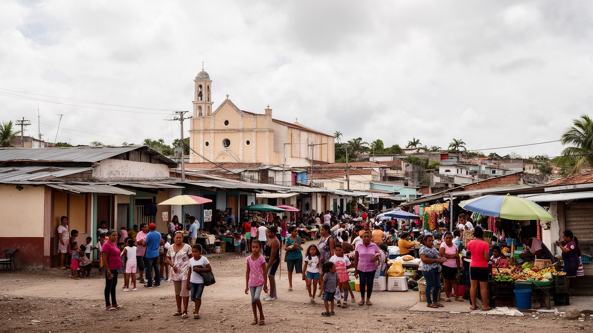
リバーサイドの生活を支える大きな力が、ラティーノの家族、労働、宗教、商業である。メキシコ系を中心に、中米や他地域につながる住民も多く、家庭では英語とスペイン語が交差し、教会、学校、市場、タコス店、理髪店、送金サービス、地域行事が日常のネットワークを作る。農業、建設、物流、清掃、介護、飲食、教育、行政などの現場で、ラティーノ住民は都市の不可欠な担い手になっている。移民一世の労働、二世や三世の教育、混合家族の市民権、在留資格への不安は、同じ地区の中で重なり合う。カトリックの行事、福音派教会、聖人祭、家族の祝い、学校のスポーツは、広い郊外で人をつなぐ大切な場である。一方で、言語支援の不足、医療へのアクセス、低賃金、住宅不安、警察や移民取締りへの不信は、生活を脆くする。ラティーノ文化は観光向けの彩りではなく、リバーサイドの労働力、食文化、地域政治、学校生活を形づくる基盤である。都市を読むには、スペイン語の看板や料理だけでなく、親が夜勤をし、子どもが大学を目指し、教会が相談窓口になり、家族が週末に集まる時間を見る必要がある。そこに内陸都市の包容力と緊張が表れる。多言語の学校連絡、医療通訳、成人教育、移民支援団体は、家族の努力だけでは埋められない制度の隙間を支える。そうした支援が届く範囲が、都市の信頼を決める。
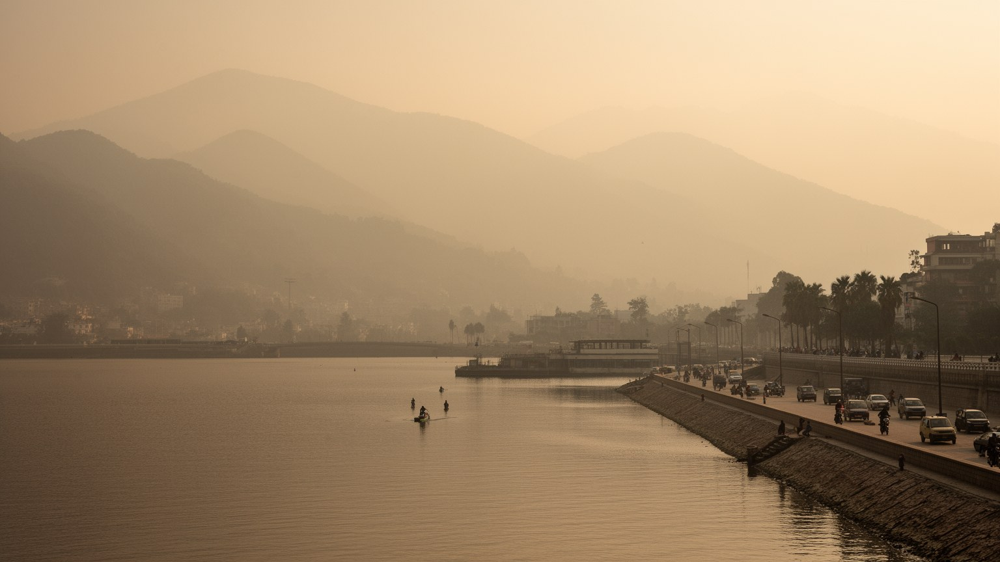
リバーサイドの気候は、晴れた空と温暖な冬だけでは語れない。内陸部は夏の暑さが厳しく、乾燥した風、山火事の煙、スモッグ、トラック交通の排気が重なる。ロサンゼルス盆地から運ばれる汚染物質や、周辺の物流施設、高速道路、倉庫、建設の動きは、空気の質を生活の問題に変える。暑さは屋外労働者、高齢者、子ども、低所得世帯、冷房費を抑える家庭に強く影響する。山火事の季節には、煙が学校、スポーツ、通勤、呼吸器疾患、在宅勤務にも関わる。乾燥した都市で住宅が山裾へ広がるほど、避難路、保険、植生管理、水使用、電力の安定が重要になる。気候リスクは自然の問題であると同時に、誰が涼しい家に住めるか、誰が倉庫や建設現場で働くか、どの地区にトラックが集中するかという社会問題である。リバーサイドで空気を読むことは、青空の美しさと健康負担を同時に見ることである。都市が成長を続けるなら、日陰、街路樹、公共交通、電動トラック、倉庫立地、冷房避難所、医療情報を地域の基盤として整えなければならない。暑さと空気は背景ではなく、内陸生活の公平さを測る指標である。子どものぜんそく、高齢者の外出控え、屋外作業の休憩時間まで、空気の質は家庭の時間割を変える。暑い午後に歩ける日陰、煙の日に休める室内、緊急情報を多言語で受け取れる仕組みは、生活の安全そのものになる。
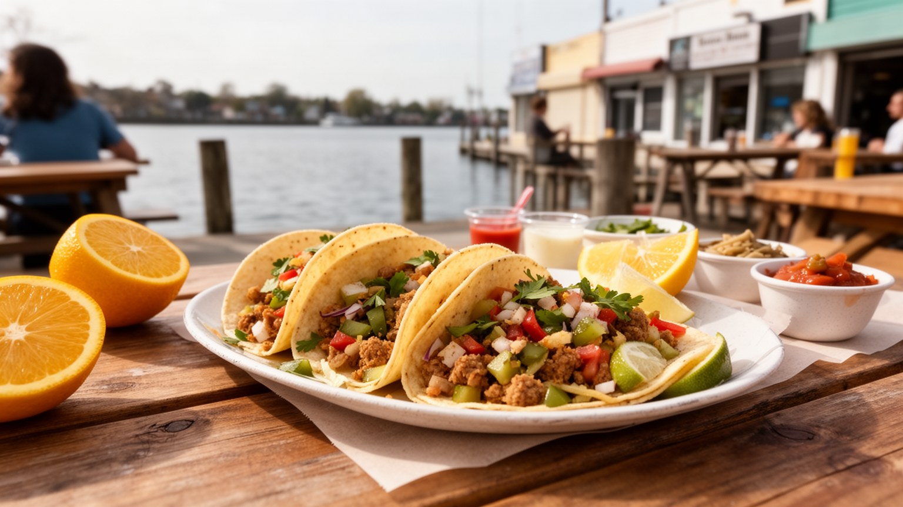
リバーサイドの日常は、車で移動する買物、学校の送迎、大学街のカフェ、家族経営の店、教会後の食事、夜勤明けの朝食に表れる。食文化ではタコス、ブリトー、パン・ドゥルセ、アメリカ南西部の料理、ダイナー、ファストフード、大学生向けの安い食事、週末のバーベキューが並び、移民の家庭料理と郊外型商業が同じ生活圏にある。柑橘の歴史は観光や記念品に残るが、現在の食卓を支えるのはスーパー、物流、農場労働、配送、低賃金のサービス職でもある。車社会では、食べる場所の選択肢が多くても、歩いて行ける範囲は限られる。高齢者、学生、低所得世帯、車を持たない人にとって、食品へのアクセスは大きな問題になる。観光客はミッション・イン周辺の雰囲気や歴史的な街並みを楽しむが、住民にとって食は家計、時間、家族、宗教行事、労働シフトと結びついている。リバーサイドの食を読むことは、料理名を並べることではない。誰が店を開き、誰が仕込み、誰が深夜に働き、誰が学校帰りに買い、どの地区に新鮮な食品が届きにくいのかを見ることである。日常の食卓は、内陸都市の移動、所得、文化の混ざり方を静かに映している。週末の市場や小さなベーカリーは、広い道路で分断された都市に顔の見える関係を戻す場所にもなる。食を通じて、広い都市圏の中に小さな近所が生まれる。
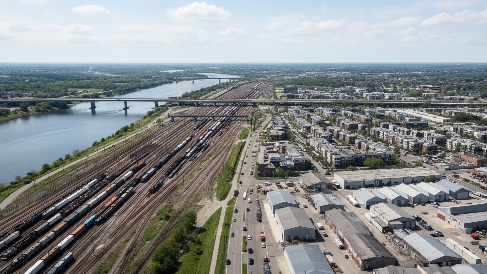
リバーサイドの成長は、道路と鉄道の上にある。州道九一号、州間高速道路二一五号、一五号、六〇号などの回廊は、沿岸部、サンバーナーディーノ、オンタリオ、砂漠方面を結び、通勤者、トラック、学生、買物客を運ぶ。メトロリンクはロサンゼルス方面への鉄道接続を提供するが、本数や駅へのアクセスは車社会の負担を完全には消せない。交通の便利さは住宅地と倉庫を広げる力になり、同時に渋滞、排気、事故、道路拡幅、騒音、通勤疲労を生む。リバーサイドでは、都市の境界よりも道路の流れが生活圏を決める。家を買う場所、学校を選ぶ場所、働きに行ける範囲、週末に訪れる店は、高速道路の出口と渋滞時間に左右される。物流車両の増加は港湾経済と結びつくが、住宅地の近くで大気汚染と交通安全の問題を強める。公共交通を改善し、歩きやすい中心部を育てることは、車に依存しすぎた内陸都市の負担を減らすために重要である。交通を読むことは、単に移動手段を見ることではない。時間を誰が失い、空気を誰が吸い、道路整備の費用を誰が負うのかを問うことである。リバーサイドの未来は、成長の速さよりも、移動の負担をどれだけ公平に減らせるかにかかっている。駅周辺の住宅、バスの接続、自転車道、歩道の日陰が増えれば、車を持たない人にも都市の選択肢が広がる。移動の設計は福祉でもある。
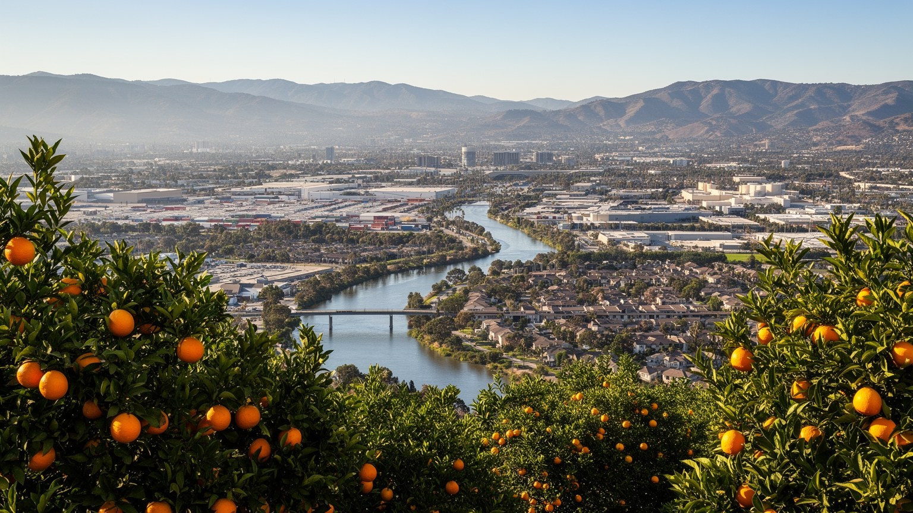
リバーサイドは、世界的な観光地としてのロサンゼルスやサンディエゴの影に隠れやすい。しかし、この内陸都市を読むと、南カリフォルニアの成長を支える現実がよく見える。柑橘産業の記憶は、土地と水と広告が作った楽園イメージを教え、物流倉庫は港湾貿易と翌日配送の負担を内陸へ運ぶ。大学は若者と研究を呼び込み、ラティーノ社会は家族、教会、労働、食文化を通じて都市を支える。住宅は沿岸部より手に届きやすいが、長い通勤、暑熱、大気汚染、山火事煙、道路依存という費用を伴う。リバーサイドの重要性は、巨大な金融中心であることではなく、世界貿易、郊外化、移民労働、気候リスク、教育機会が一つの内陸生活圏で交差する点にある。中心部の歴史的建築、山並み、倉庫、大学キャンパス、住宅地、教会を一緒に見ると、都市は単なる郊外ではなく、南カリフォルニアの負荷を受け止める場所として立ち上がる。リバーサイドを読むことは、海岸の華やかさの背後で、誰が移動し、働き、空気を吸い、家を買い、子どもを学校へ送り、暑さに備えるのかを読むことである。その問いが、内陸都市の未来を決めていく。観光客に見える歴史的な美しさと、住民が感じる通勤や空気の重さを重ねると、リバーサイドは小さな地方都市ではなく、現代南カリフォルニアの矛盾を映す鏡になる。その鏡は、沿岸の繁栄が内陸の暮らしに依存している事実を映す。